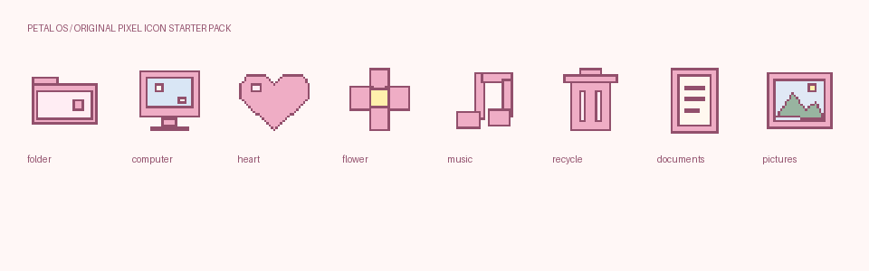

PETAL OS / VERSION 1.0
Your Retro Girly interactive wallpaper: a live clock, calendar with local notes, pixel hearts and bows, three editable shortcut zones, three palettes, four built-in background styles and your own images.
Open wallpaper preview ↗ · See matching icons ↗ · Verification report ↗
Documents\Wallpapers\PetalOS.index.html to open it in Edge or Chrome. No build, server, account, API key, or internet connection is needed.Settings save locally when the browser/player allows storage. Export settings backs up appearance, notes and uploaded image as JSON. Import restores that file. Appearance reset keeps notes. The local file, GitHub Pages, and Lively each have separate storage; they do not sync. Private browsing, browser cleanup, moving the file, or player changes can remove or isolate saved settings. Use exports for important notes. This is a lightweight note calendar, without reminders, accounts or cloud sync.
Petal-OS-Lively.zip. This ZIP has LivelyInfo.json at its root.index.html. Keep that whole folder in place; Lively may reference it rather than copy it.For a custom background in Lively, select an image in the Custom background image control, then select Background → Custom image. The package includes a sample rose gingham PNG. If your version does not show a file picker, add PNG/JPG/WebP files directly to the wallpaper’s backgrounds folder and reopen Customise. Palette and accent are separate controls in Lively: choose an accent too if you want it to match the palette.
Lively renders this webpage behind the Windows desktop. It does not turn the zones into real folders or give the webpage permission to move files, launch installed apps, or replace Explorer. Real Windows icons sit above it and can cover controls.
Official references: Lively interaction and properties; Lively input and file-location troubleshooting.
On the Windows desktop, right-click empty space → View → turn off Auto arrange icons if you want free placement. Drag your real shortcuts into the three outlined areas. The wallpaper does not detect or manage them. The layout adjusts for screen size, so icon placement may need adjustment after changing resolution, scaling or display arrangement. The clock and calendar sit on the left; leave those controls clear.

The icons folder contains eight original designs in multi-resolution .ico, transparent 256px PNG and editable SVG. ICO files include 16, 24, 32, 48, 64, 128 and 256px versions.
Keep the icons in a permanent location; Windows references their paths. Changing icons is manual. No registry changes, installers, executables or automatic system modifications are included.
The public preview is published at hkcm91.github.io/retro-girly-wallpaper. Source files and downloadable packages are in hkcm91/retro-girly-wallpaper. The steps below explain how to redeploy it or host your own copy.
retro-girly-wallpaper, or choose an existing repository you own and intend to use for this project. Do not upload personal settings exports or private notes.retro-girly folder into the repository root, keeping index.html, style.css, app.js, icons/, backgrounds/, and .nojekyll together. Do not upload only the ZIP. Include Lively JSON and guides if you want visitors to download the source for Lively.main) and /(root), then Save.https://USERNAME.github.io/REPOSITORY/. Use the exact link shown in Settings → Pages.retro-girly/ in its already-published source and visit that subpath instead. Preserve its existing Pages settings.GitHub Pages availability depends on repository visibility and your GitHub plan. Public repositories work with GitHub Free. Pages is a website host, not the Windows wallpaper engine. You can add the published URL to Lively, but the local ZIP is the self-contained option and works without network access. Your first visit to the hosted URL needs internet; no offline service-worker cache is claimed.
Official deployment references: GitHub Pages quickstart and configuring a publishing source.
| File | Purpose |
|---|---|
| index.html | Wallpaper layout, settings and help dialogs |
| style.css | Theme colors, backgrounds, animations and responsive layout |
| app.js | Clock, calendar, persistence, settings, sound and Lively callback |
| LivelyInfo.json | Lively web wallpaper import metadata |
| LivelyProperties.json | Native Lively Customise controls |
| icons/ | ICO, PNG, SVG and contact sheet |
| backgrounds/ | Sample image and a place for your Lively custom backgrounds |
No external fonts, CDN libraries, trackers, fetch calls or network APIs are used. Notes and settings stay in local storage; exports contain them, so share exports thoughtfully. Source and original art are provided under the included MIT license. Lively remains a separate product with its own license.